朝のニュースまとめ
2026年11月7日（土）
🇯🇵 日本の主要ニュース
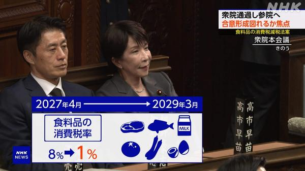
消費税減税法案が衆院通過、参院で与野党の合意形成が焦点に食料品の消費税減税関連法案が自民・維新などの賛成多数で衆議院を通過し、参議院に送られました。与党が少数の参院で、衆院で反対した野党の賛同をどこまで取り付けられるかが焦点です。
出典：NHK
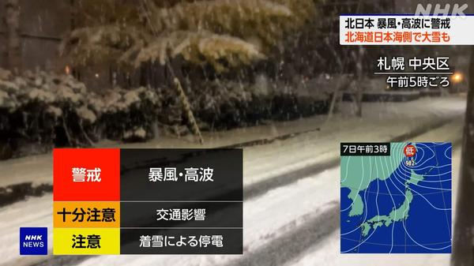
冬型強まり北日本中心に暴風警戒、北海道日本海側は大雪のおそれ強い冬型の気圧配置で、北日本では8日にかけ非常に強い風と雪や雨が予想されます。北海道の日本海側では大雪となるおそれがあり、暴風・高波と交通への影響に注意が必要です。
出典：NHK
外務省幹部がロシア訪問、JT子会社の管理下措置に抗議し撤回要求
プーチン大統領令でJT子会社のロシア生産拠点が一時的にロシア企業の管理下に置かれたことを受け、外務省幹部がロシア外務省を訪れ、措置への抗議と即時撤回を求めました。
出典：NHK
陸自戦車3人死亡事故、前の砲弾の破片が装填部に残っていたのが原因か
ことし4月に大分の演習場で起きた戦車内の砲弾破裂事故について、前の砲弾の破片が装填箇所に異物として残っていたことが原因とみられることがわかりました。
出典：NHK
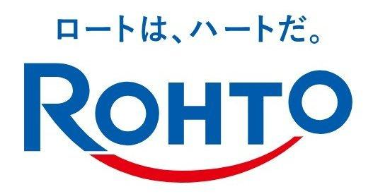
ロート製薬、通販システム不正アクセスで約280万人分の個人情報漏えいロート製薬は通販システムの不正アクセスで顧客約280万人分の個人情報が漏えいしたと発表。うち約9700件ではクレジットカード情報も不正取得されていたとしています。
出典：ITmedia／NHK
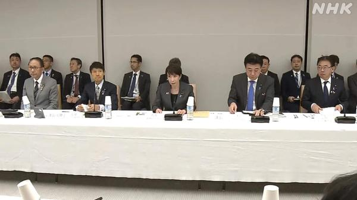
政府、相次ぐ情報漏えい受け緊急サイバー対策パッケージを決定不正アクセスによる情報漏えいが続くなか、政府は緊急対策パッケージを決定。不要データの消去徹底や、攻撃元を観測する能動的サイバー防御の戦略的実行などを盛り込みました。
出典：NHK
アララへの不正アクセス、追加で324万件流出 累計メールアドレス約8132万件に
メール配信のアララは、別クラウドからも324万件のメールアドレス流出を確認したと発表。これまでに判明した分と合わせ、流出規模は約8132万件に達しました。
出典：NHK
GPIFの7〜9月運用、金利上昇で約5.2兆円の赤字
公的年金を運用するGPIFの7〜9月期実績は、世界的な金利上昇による外国債券安などを背景に約5兆2500億円の赤字となりました。資産配分の変更はなしとしています。
出典：NHK／ロイター
三菱自動車、電動車シフト加速で今期最終利益を100億円に下方修正
三菱自動車は中東情勢の影響で電動車シフトが急速に進み販売減が見込まれるとして、今年度の最終利益見通しを250億円から100億円へ下方修正しました。
出典：NHK
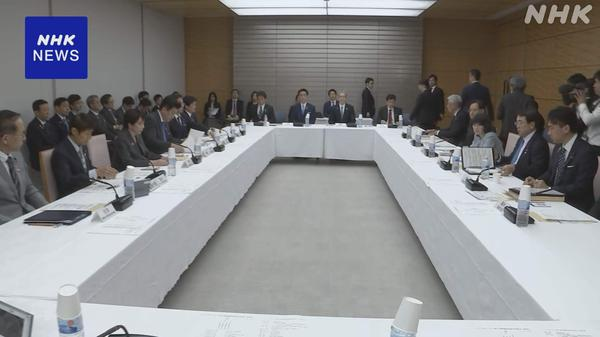
サイバー攻撃対応強化で法改正検討へ、国内通信情報の取得が焦点政府は能動的サイバー防御の関連法改正を検討。現行では認められていない、国内で完結する通信情報の取得を可能にするかどうかが今後の焦点となる見通しです。
出典：NHK
🌍 世界の主要ニュース
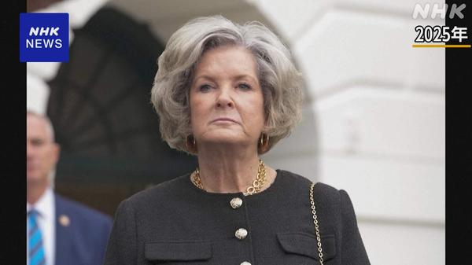
トランプ政権、ワイルズ首席補佐官が退任 後任にスティーブン・ミラー氏中間選挙で共和党が大敗して以降、トランプ政権初の主要人事交代。スーザン・ワイルズ首席補佐官が退任し、強硬派のスティーブン・ミラー次席補佐官が後任に起用されます。
出典：NHK／AP
ナスダックは1％超上昇で反発、ただAI・データセンター規制懸念は根強く
前日急落した半導体などを中心に買い戻しが入り、ナスダックは一時2％超高。それでも中間選挙後のAI・データセンター規制強化への警戒は続き、値動きは不安定です。
出典：NHK／BBC
ヨーロッパで旅客機への爆破予告が再燃、テレビ局も標的に
チェコなどで再び旅客機への爆破予告があり、スペイン外相は欧州弱体化を狙うハイブリッド攻撃との見方を示しました。爆発物は確認されていません。
出典：NHK／BBC
カリフォルニア州知事、死刑囚548人全員を終身刑に減刑
ニューサム知事は州内の全死刑囚約548人の刑を仮釈放なしの終身刑へ減刑すると発表。同州は歴史的に全米最多の死刑囚を抱えてきました。
出典：NHK／AP
テスラ、サイバートラック生産を2027年半ばめどに段階終了へ
マスクCEOはテキサスでのサイバートラック生産を2027年半ばをめどに段階的に終了し、自動運転タクシー「Cybercab」の生産枠を確保する方針を示しました。
出典：NHK／BBC
香港の民主活動家ジョシュア・ウォン氏に追加で懲役10年
国家安全維持法などで服役中のジョシュア・ウォン氏に、さらに懲役10年が言い渡されたとAPが報じました。香港の民主派弾圧が続くなかでの追加判決です。
出典：AP
教皇レオ14世、肺手術後初の外遊でウルグアイに到着 南米歴訪開始
先月肺の一部を摘出した教皇レオ14世が、ウルグアイを皮切りにアルゼンチン・ペルーを訪れる南米歴訪を開始しました。手術後初の長距離外遊となります。
出典：AP／BBC
米AI株が反発、前日の急落で時価総額は数兆ドル規模が消失後
民主党勝利を受けた規制懸念でハイテク株が急落した翌日、AI関連株に買い戻し。BBCは時価総額で数兆ドル規模がいったん消えたあとの反発だと伝えています。
出典：BBC
ケニア終末論カルト指導者に終身刑、信者191人殺害で有罪
信者に子どもを飢え死にさせるなどしたとされるポール・マッケンジー被告に、終身刑が言い渡されました。191人殺害の罪で有罪となっています。
出典：BBC
🤖 AIニュース
 OpenAI、追加で約110億ドル調達との報道 評価額は約1.25兆ドル
OpenAI、追加で約110億ドル調達との報道 評価額は約1.25兆ドル未完了の資金調達ラウンドの一環として、OpenAIが追加で約110億ドルを調達したと報じられました。評価額は約1.25兆ドルとされる大型案件です。
出典：TechCrunch
 Meta、Museエージェント向けのカスタム空間「Spaces」を発表
Meta、Museエージェント向けのカスタム空間「Spaces」を発表MetaはAIエージェント「Muse」内で用途別にアプリ的な体験を作れる「Spaces」を公開。チーム作業や用途別の協働を想定した新機能です。
出典：TechCrunch／The Verge
数百のArtex製AIハッキングツールがネット上に公開状態で発見
セキュリティ研究者が、侵入テスト用AIツール「Artex」をホストするサーバー数百台がインターネットに露出しているのを確認しました。
出典：TechCrunch
 企業のAI支出が伸び悩み、Anthropic IPOを控えて警戒感
企業のAI支出が伸び悩み、Anthropic IPOを控えて警戒感利用は増えても支出は頭打ち、とRampのデータが示すなか、Anthropicの株式公開を控えた投資家の間では価格競争やコスト管理が焦点になっています。
出典：TechCrunch
 パロアルトネットワークス、AIエージェント保安のClutchを約5億ドルで買収協議
パロアルトネットワークス、AIエージェント保安のClutchを約5億ドルで買収協議サイバー大手Palo Alto Networksが、AIエージェント向けセキュリティのスタートアップClutchを約5億ドルで買収する方向で協議していると報じられました。
出典：TechCrunch
Amazon、Alexaへのテキスト注文で買い物できる機能を展開へ
AmazonはAlexa for Shoppingで、メッセージ送信により買い物を依頼できる機能を米ユーザー向けに展開。招待制から順次拡大する方針です。
出典：TechCrunch／Engadget
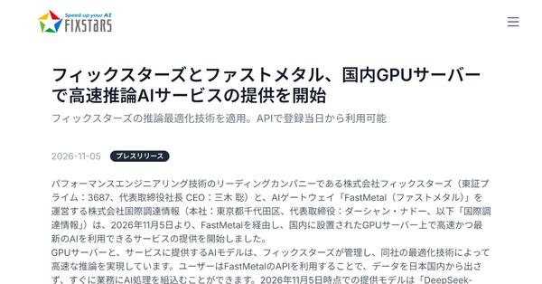
フィックスターズ、国内GPUサーバでオープンウェイトLLM利用サービス開始フィックスターズは国内GPU上でオープンウェイトモデルを使えるサービスを開始。まずはDeepSeek系モデルから提供します。
出典：ITmedia
米住民投票でデータセンター建設反対が相次ぐ、規制派知事も当選
中間選挙に合わせた住民投票で、AIデータセンター関連41件のうちほぼ全てで建設禁止や規制強化が可決。推進派には逆風です。
出典：ITmedia
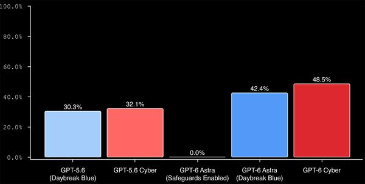
OpenAI、サイバー特化「GPT-6 Cyber」発表 Linux脆弱性948件を攻略と説明OpenAIは防御用途に限定したサイバーセキュリティ特化モデルを公開。Linuxカーネルで攻撃可能な脆弱性948件を見つけたと説明しています。
出典：PC Watch／ITmedia
ピザーラ、許諾なくAI生成した「Dr.STONE」コラボ広告で謝罪
ピザーラ運営のフォーシーズは、TikTokのAI広告自動生成でアニメ製作委の監修・許諾なく配信していたとして謝罪しました。
出典：ITmedia
💻 PC・ガジェットニュース
Googleスマートグラス、Gentle Monsterが11月12日予約開始を予告
眼鏡ブランドGentle Monsterが、Googleの「Intelligent Eyewear」（Android XR対応）を11月12日から予約開始すると発信し、発表が近いとの観測が強まっています。
出典：Engadget
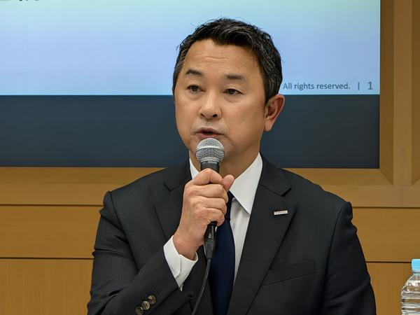
ドコモ5G SA障害、原因は交換機メモリ異常とDB更新の並行作業全国最大約158.7万人に影響した5G SA障害について、ドコモは交換機のメモリ異常とデータベース更新の同時作業が原因と説明。暫定対処を終え恒久対策を進めています。
出典：ケータイ Watch
日本エイサー、上下2画面の折りたたみ式デュアルモニターを投入
ノートPCに接続するだけで画面を2枚追加できる、上下配置の折りたたみ式デュアルモニター（15.6型／23.8型）を日本エイサーが発売します。
出典：PC Watch
Google、会話指示で部分編集できる動画生成AI「Gemini Omni 1.2 Flash」
生成動画の気に入らない箇所を「背景を差し替えて」などの会話指示だけで直せる動画生成AIをGoogleが発表しました。
出典：PC Watch
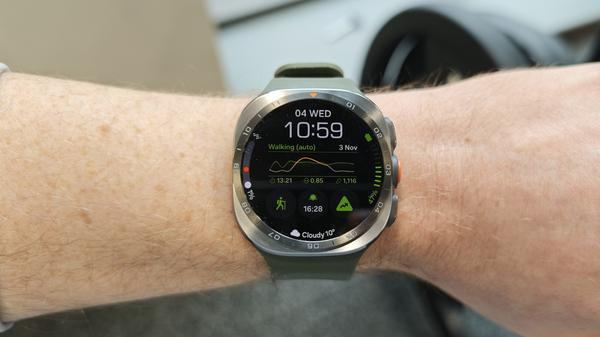
Samsung Galaxy Watch Ultra 2レビュー、バッテリー寿命が新基準にEngadgetは明るいディスプレイと長時間バッテリーを評価し、Galaxy Watch Ultra 2をスマートウォッチの新基準だと位置づけています。
出典：Engadget
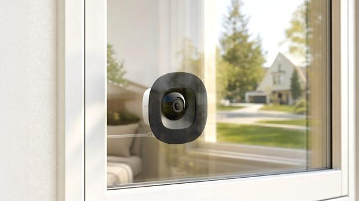
Eufy、室内から屋外を映す窓貼り防犯カメラE10を発売窓の内側に貼り付け屋外を監視する「Window Camera E10」（約80ドル）が購入可能に。配線なしで屋外監視を始められるモデルです。
出典：Engadget
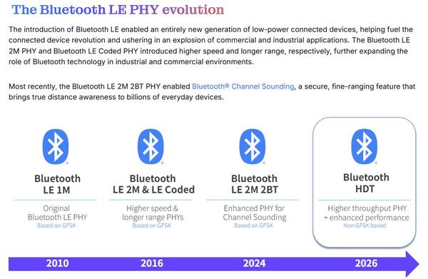
Bluetooth LEが最大7.5Mbpsの新物理層「HDT」を採択、Classic超えBluetooth SIGはLE向け新物理層HDTを採択。省電力のLEが速度でもClassicを上回る通信を正式に可能にします。
出典：PC Watch
KDDIとnewmoが資本業務提携、2028年に大阪・堺市で自動運転タクシー商用化へ
KDDIとnewmoは自動運転タクシー実装に向け提携。2028年の大阪府堺市での商用化を目指し、通信・AIと運行ノウハウを組み合わせます。
出典：ITmedia
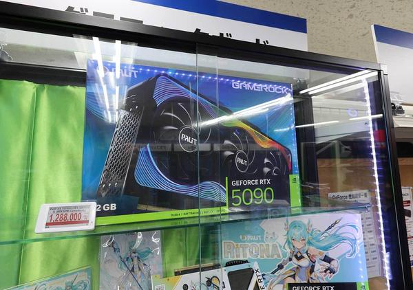
GeForce RTX 5090、供給増でも価格は120万円台 アキバで需要根強く入手難が続いていたRTX 5090搭載カードは供給が戻りつつある一方、価格は120万円台に高騰。それでも秋葉原では買い手が途切れないと報じられています。
出典：ITmedia
ソニー、初代ウォークマン付属機をイメージしたType-C有線ヘッドホン「MDR-3R」
ソニーは初代ウォークマン付属ヘッドホンのコンセプトを継承したUSB Type-C有線ヘッドホン「MDR-3R」を発表しました。
出典：ITmedia
🔥 Xのトレンド（日本）
ジャンルで絞らず上位20件を掲載。「未確認」はX上の投稿だけを根拠にしたもので、報道機関による裏付けはありません。
1. #ひかリュウ
Snow Man・岩本照のNACK5冠ラジオ「ロウリュウしてもいいですか？」リスナー呼称「ひかリュウ」がトレンド1位。土曜朝の放送にあわせファン投稿が集中しています。
⚠ 未確認（X情報のみ）

4. JESSE
ロックバンドRIZE／The BONEZのボーカル・JESSE容疑者（46）がコカイン使用容疑で警視庁に逮捕されたと報道。2019年の薬物事件に続く再逮捕に衝撃が広がっています。
出典：NHK
西武鉄道presentsの岩本照冠ラジオ（NACK5・土曜7:30）。愛称投票で「ひかリュウ」が定着し、今日の放送でもリスナー投稿がトレンド入りしています。
⚠ 未確認（X情報のみ）
7. イケパラ
『花ざかりの君たちへ』の通称「イケメン☆パラダイス（イケパラ）」再脚色への期待投稿。LienelやRampage、龍宮城など若手男性グループの出演発表が引き金です。
⚠ 未確認（X情報のみ）
8. 織山くん
ジャニーズJr.出身・Howzitの織山尚大さんをめぐるファン投稿がトレンド入り。土曜朝の番組・活動関連の言及が目立っています（具体的な新発表の裏取りは限定的）。
⚠ 未確認（X情報のみ）
9. GO HARD
Snow Manの楽曲「GO HARD」が、岩本照ラジオのオンエアやInstagramストーリーズと結びつき再び言及されています。朝のトレンドでもひかリュウ関連と並びました。
⚠ 未確認（X情報のみ）
10. マイベストテン
ゲームのガチャ演出・排出枠を指す「マイベストテン」をめぐるプレイヤー間の議論がトレンド入り。引き直し方針や星6確定などを語る投稿が中心です（タイトル特定は未確認）。
⚠ 未確認（X情報のみ）

13. #RYUHEI_HBD_20th
ボーイズグループBE:FIRSTのRYUHEIさんが20歳の誕生日。公式がお祝い投稿を出し、ファンハッシュタグで祝福が急増しています。
出典：BE:FIRST公式
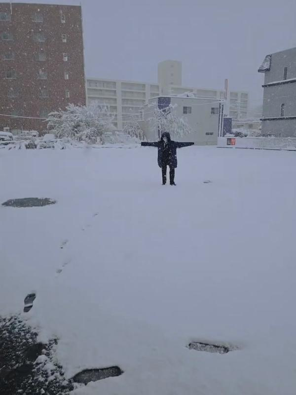
14. 外真っ白
立冬の朝、北海道などで積雪や霜を伝える「外が真っ白」投稿が増加。冬型気圧配置のニュースとも重なり、季節感のある写真・動画が共有されています。
⚠ 未確認（X情報のみ）


Grok Bot がまとめました。